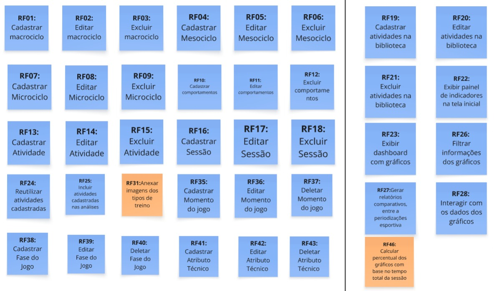

10 Backlog do Produto
Esta seção descreve o backlog de produto (preliminar ou completo, dependendo do produto), que é uma lista priorizada de todas as funcionalidades e melhorias planejadas para o software. Também aborda a priorização dessas funcionalidades e o que será entregue no Produto Mínimo Viável (MVP).
10.1 Backlog Geral
Aqui, cabe destacar que todas as histórias de usuários relacionadas, a seguir, são derivadas da lista de requisitos funcionais apresentados, anteriormente, neste documento. Esta é uma lista preliminar e deverá sofrer ajustes sempre que necessário, durante o desenvolvimento do produto FutBoard.
A tabela, a seguir, apresenta cada um dos requisitos funcionais (RFs) declarados utilizando a técnica de User Story (US), assim como a rastreabilidade com os requisitos não funcionais (RNFs) e a indicação de inclusão no Produto Mínimo Viável (MVP).
| RF | User Story derivada | RNFs relacionados | Está no MVP? |
|---|---|---|---|
| RF01 Cadastrar macrociclo | US01 Como treinador, quero cadastrar um macrociclo informando nome e data de início, para estruturar o planejamento mais amplo da temporada esportiva. | RNF02, RNF03 | Sim |
| RF02 Editar macrociclo | US02 Como treinador, quero editar as informações de um macrociclo existente, para manter as datas e o planejamento da temporada atualizados. | RNF02, RNF03 | Sim |
| RF03 Excluir macrociclo | US03 Como treinador, quero excluir um macrociclo cadastrado, para remover planejamentos cancelados ou descontinuados da periodização. | RNF02, RNF04 | Sim |
| RF04 Cadastrar Mesociclo | US04 Como treinador, quero cadastrar mesociclos vinculados a um macrociclo, para organizar blocos de treino com objetivos táticos específicos. | RNF02, RNF03 | Sim |
| RF05 Editar Mesociclo | US05 Como treinador, quero editar os dados de um mesociclo já cadastrado, para ajustar metas e prazos dos blocos de treinamento. | RNF02, RNF03 | Sim |
| RF06 Excluir Mesociclo | US06 Como treinador, quero excluir um mesociclo cadastrado, para desconsiderar blocos que não serão mais realizados. | RNF02, RNF04 | Sim |
| RF07 Cadastrar Microciclo | US07 Como treinador, quero cadastrar microciclos vinculados a um mesociclo, para detalhar a programação semanal de treinamentos. | RNF02, RNF03 | Sim |
| RF08 Editar Microciclo | US08 Como treinador, quero editar as informações de um microciclo, para adequar a rotina semanal às necessidades da equipe. | RNF02, RNF03 | Sim |
| RF09 Excluir Microciclo | US09 Como treinador, quero excluir um microciclo cadastrado, para remover programações semanais canceladas. | RNF02, RNF04 | Sim |
| RF10 Cadastrar comportamentos | US10 Como treinador, quero cadastrar comportamentos táticos (ofensivos e defensivos), para padronizar os princípios de jogo a serem trabalhados nas atividades. | RNF02, RNF03 | Sim |
| RF11 Editar comportamentos | US11 Como treinador, quero editar comportamentos táticos cadastrados, para refinar os conceitos aplicados nos treinamentos. | RNF02, RNF03 | Sim |
| RF12 Excluir comportamentos | US12 Como treinador, quero excluir comportamentos táticos em desuso, para manter a base conceitual de treinos organizada. | RNF02, RNF04 | Sim |
| RF13 Cadastrar Atividade | US13 Como treinador, quero cadastrar uma atividade com seus parâmetros fixos (tipologia e SSP), para registrar novos modelos de exercício. | RNF02, RNF03 | Sim |
| RF14 Editar Atividade | US14 Como treinador, quero editar os dados de uma atividade já cadastrada, para atualizar sua descrição ou tipologia. | RNF02, RNF03 | Sim |
| RF15 Excluir Atividade | US15 Como treinador, quero excluir uma atividade cadastrada, para descartar exercícios que não fazem mais parte da metodologia. | RNF02, RNF04 | Sim |
| RF16 Cadastrar Sessão | US16 Como treinador, quero cadastrar uma sessão de treino vinculada à periodização, para registrar a execução diária das atividades em campo. | RNF02, RNF03, RNF04 | Sim |
| RF17 Editar Sessão | US17 Como treinador, quero editar os dados e exercícios de uma sessão de treino, para refletir ajustes ocorridos durante a prática. | RNF02, RNF03, RNF04 | Sim |
| RF18 Excluir Sessão | US18 Como treinador, quero excluir uma sessão de treino cadastrada, para retirar do histórico registros incorretos ou cancelados. | RNF02, RNF04 | Sim |
| RF19 Cadastrar atividades na biblioteca | US19 Como treinador, quero cadastrar atividades diretamente na biblioteca de treinos, para disponibilizar exercícios reutilizáveis em sessões futuras. | RNF02, RNF03 | Sim |
| RF20 Editar atividades na biblioteca | US20 Como treinador, quero editar atividades cadastradas na biblioteca, para aprimorar os modelos de treino sem alterar os dados históricos. | RNF02, RNF03 | Sim |
| RF21 Excluir atividades na biblioteca | US21 Como treinador, quero excluir atividades da biblioteca, para remover exercícios descontinuados do acervo de treinos. | RNF02, RNF04 | Sim |
| RF22 Exibir painel de indicadores na tela inicial | US22 Como treinador, quero visualizar um painel com os principais indicadores na tela inicial, para consultar rapidamente o volume de sessões e minutos acumulados. | RNF02, RNF04 | Sim |
| RF23 Exibir dashboard com gráficos | US23 Como treinador, quero visualizar um dashboard centralizado com gráficos analíticos dos treinos, para compreender a distribuição das cargas sem navegar por várias páginas. | RNF02, RNF04 | Sim |
| RF24 Reutilizar atividades cadastradas | US24 Como treinador, quero incluir atividades da biblioteca na sessão com preenchimento automático dos dados fixos, para acelerar o registro diário de treinos. | RNF02, RNF03 | Sim |
| RF25 Incluir atividades cadastradas nas análises | US25 Como treinador, quero ajustar campos variáveis de uma atividade na sessão sem alterar seu cadastro-base na biblioteca, para flexibilizar o treino mantendo o padrão da biblioteca. | RNF02, RNF03, RNF04 | Sim |
| RF26 Filtrar informações dos gráficos | US26 Como treinador, quero filtrar os gráficos por macrociclo, mesociclo, microciclo e sessão, para obter análises segmentadas por período ou contexto de treino. | RNF02, RNF04 | Sim |
| RF27 Gerar relatórios comparativos, entre a periodizações esportiva | US27 Como treinador, quero gerar relatórios comparativos entre ciclos do mesmo nível (macro, meso ou micro), para confrontar indicadores de carga e variedade de exercícios entre períodos. | RNF02, RNF04 | Sim |
| RF28 Interagir com os dados dos gráficos | US28 Como treinador, quero alternar a visualização dos gráficos entre minutos absolutos e porcentagem relativa da sessão, para avaliar o treino sob diferentes métricas de carga. | RNF02, RNF04 | Sim |
| RF29 Criar conta | US29 Como treinador ou auxiliar, quero cadastrar uma conta de acesso na aplicação, para gerenciar meus dados e credenciais de uso individual. | RNF01, RNF02 | Não |
| RF30 Fazer login | US30 Como treinador ou auxiliar, quero me autenticar no sistema com usuário e senha, para garantir a segurança no acesso às informações do clube. | RNF01, RNF02 | Não |
| RF31 Anexar imagens dos tipos de treino | US31 Como treinador, quero anexar imagens aos exercícios cadastrados na biblioteca, para ilustrar a disposição espacial e dinâmica do treino em campo. | RNF02, RNF03 | Sim |
| RF32 Anexar pontuações de cada exercício | US32 Como treinador, quero registrar a pontuação planejada e obtida em cada exercício da sessão, para mensurar o índice de aproveitamento dos atletas. | RNF02, RNF03, RNF04 | Não |
| RF33 Analisar os dados quantitativos dos atletas | US33 Como treinador, quero analisar dados quantitativos de desempenho individual dos atletas (scout), para fundamentar decisões técnicas e de escalação. | RNF01, RNF02, RNF04 | Não |
| RF34 Integração com IAs para análise pontuais dos dados cadastrados | US34 Como treinador, quero gerar análises e insights textuais automáticos via inteligência artificial sobre os dados cadastrados, para obter interpretações táticas ágeis sobre os treinos. | RNF02, RNF04 | Sim |
| RF35 Cadastrar Momento do jogo | US35 Como treinador, quero associar um momento de jogo (ataque, defesa, transição) a uma atividade, para categorizar o foco tático do exercício. | RNF02, RNF03 | Sim |
| RF36 Editar Momento do jogo | US36 Como treinador, quero editar o momento de jogo vinculado a uma atividade, para corrigir ou atualizar o direcionamento tático cadastrado. | RNF02, RNF03 | Sim |
| RF37 Deletar Momento do jogo | US37 Como treinador, quero desvincular o momento de jogo de uma atividade, para retirar restrições táticas de exercícios generalistas. | RNF02, RNF03, RNF04 | Sim |
| RF38 Cadastrar Fase do Jogo | US38 Como treinador, quero associar a fase de jogo trabalhada a uma atividade setorial, para especificar o momento tático de construção ou finalização do treino. | RNF02, RNF03 | Sim |
| RF39 Editar Fase do Jogo | US39 Como treinador, quero editar a fase de jogo vinculada a uma atividade, para adequar a categorização à estratégia atual da equipe. | RNF02, RNF03 | Sim |
| RF40 Deletar Fase do Jogo | US40 Como treinador, quero desvincular a fase de jogo de uma atividade, para simplificar o cadastro de atividades que não sejam jogos setoriais. | RNF02, RNF03, RNF04 | Sim |
| RF41 Cadastrar Atributo Técnico | US41 Como treinador, quero associar um atributo técnico específico a uma atividade, para registrar fundamentos e habilidades individuais trabalhadas. | RNF02, RNF03 | Sim |
| RF42 Editar Atributo Técnico | US42 Como treinador, quero editar o atributo técnico associado a uma atividade, para manter o cadastro em conformidade com o fundamento exigido. | RNF02, RNF03 | Sim |
| RF43 Deletar Atributo Técnico | US43 Como treinador, quero desvincular o atributo técnico de uma atividade, para flexibilizar a caracterização de treinos puramente táticos ou físicos. | RNF02, RNF04 | Sim |
| RF44 Apresentar contexto dos indicadores | US44 Como treinador, quero visualizar informações contextuais e filtros vigentes junto aos gráficos, para interpretar corretamente o cenário dos dados exibidos. | RNF02, RNF04 | Não |
| RF45 Apresentar limitações dos indicadores | US45 Como treinador, quero ser alertado sobre amostras parciais ou limitações nos dados exibidos, para evitar interpretações equivocadas nos gráficos analíticos. | RNF02, RNF04 | Não |
| RF46 Calcular percentual dos gráficos com base no tempo total da sessão | US46 Como treinador, quero que o percentual de tempo dos gráficos seja calculado sobre a duração total da sessão de treino, para obter uma proporção real e sem distorções dos estímulos aplicados. | RNF02, RNF04 | Sim |
Observação: O RNF02 (Interface Responsiva e Adaptável) e o RNF03 (Eficiência no Cadastro de Treinos) aplicam-se de forma transversal a quase todas as interfaces e fluxos de cadastro da aplicação, assegurando que o tempo de registro de treinos pelo treinador seja inferior a 2 minutos e utilizável em qualquer dispositivo (desktop, tablet e mobile). O RNF04 (Atualização em Tempo Real do Dashboard) aplica-se transversalmente a todas as operações de cadastro, edição ou exclusão de ciclos, sessões e atividades que reflitam em métricas visuais, garantindo atualização em até 5 segundos. O RNF01 (Proteção de Dados Pessoais dos Atletas) relaciona-se diretamente com o módulo de autenticação e perfis de acesso (RF29 e RF30), e ambos foram postergados para entregas futuras.
10.2 Priorização do Backlog Geral e MVP
Para priorizar o backlog do FutBoard, cada requisito funcional (RF) recebeu quatro notas: valor de negócio, esforço, complexidade e conhecimento da equipe. As três últimas foram combinadas em uma única medida, o esforço técnico, que foi cruzada com o valor de negócio para posicionar cada RF em um quadrante da matriz Valor x Esforço.
1. Critérios e legendas
1.1 Valor de negócio
O valor de negócio foi definido a partir da justificativa dada pelo cliente para cada funcionalidade.
| Pontuação | Interpretação | Justificativa do cliente |
|---|---|---|
| 4 | Essencial | O sistema necessita dessa funcionalidade. |
| 3 | Muito valioso | Agrega muito valor ao produto e deve ser priorizado. |
| 2 | Desejável | Seria interessante ter, mas o sistema funciona perfeitamente sem. |
| 1 | A definir | Nota ainda não utilizada no backlog atual. |
1.2 Esforço
| Pontuação | Interpretação | Descrição |
|---|---|---|
| 1 | Esforço baixo | Até 2 horas |
| 2 | Esforço moderado | Entre 2 e 6 horas |
| 3 | Esforço alto | Entre 6 e 12 horas |
| 4 | Esforço muito alto | Mais de 12 horas |
1.3 Complexidade
| Pontuação | Interpretação |
|---|---|
| 1 | Operações cadastrais elementares (CRUD direto) em entidades isoladas, com validações de formato padronizadas, sem dependências de fluxo ou cálculos. Atividades com consumo de dados do banco. |
| 2 | Operações com dependência hierárquica (efeitos em cascata), integridade referencial estrita, upload de arquivos ou manipulação de coleções locais. |
| 3 | Lógica de negócio analítica, processamento em tempo de execução, cálculos derivados e reatividade/interdependência entre múltiplos componentes visuais. |
| 4 | Requisitos com alta incerteza técnica, algoritmos pesados de inferência/estatística ou dependência crítica de serviços/APIs externas de terceiros. |
1.4 Conhecimento da equipe
| Pontuação | Interpretação |
|---|---|
| 1 | A equipe domina plenamente os conhecimentos necessários. |
| 2 | A equipe possui conhecimento suficiente, com pouca aprendizagem adicional. |
| 3 | A equipe precisa desenvolver conhecimentos relevantes. |
| 4 | A equipe ainda não possui os conhecimentos ou recursos necessários. |
2. Como as notas foram definidas: votação e média
As notas de esforço, complexidade e conhecimento da equipe não foram decididas por uma pessoa só. Para cada critério de cada requisito, todos os seis membros da equipe votaram individualmente, usando as legendas acima, e a nota final foi a média dos votos, arredondada para o inteiro mais próximo (valores com 0,5 sobem para o inteiro seguinte).
Exemplo de votação para um critério de um requisito:
| Membro | Voto |
|---|---|
| Giovana | 3 |
| Guilherme L. | 3 |
| Guilherme T. | 2 |
| Gustavo | 2 |
| Leonardo | 3 |
| Rafael | 2 |
| Média | 2,5 → 3 |
Cálculo: (3 + 3 + 2 + 2 + 3 + 2) / 6 = 2,5, arredondado para 3.
3. Esforço técnico
O esforço técnico resume o custo de desenvolvimento de um RF em um único número, entre 1 e 4, calculado como a média simples das três notas finais:
Esforço técnico = (Esforço + Complexidade + Conhecimento da equipe) / 3
Exemplo com o RF34 (Gerar análises textuais dos dados cadastrados, com IA): (3 + 4 + 4) / 3 = 3,67.
4. Matriz Valor x Esforço e quadrantes
Cada RF é posicionado em um quadrante comparando o valor de negócio com o esforço técnico, tendo 2 como ponto de corte nos dois eixos.
| Quadrante | Regra | Leitura | Prioridade sugerida |
|---|---|---|---|
| Q2 | Valor > 2 e esforço técnico <= 2 | Alto valor / Baixa carga técnica | Prioridade 1 |
| Q1 | Valor > 2 e esforço técnico > 2 | Alto valor / Alta carga técnica | Prioridade 2 |
| Q3 | Valor <= 2 e esforço técnico <= 2 | Baixo valor / Baixa carga técnica | Prioridade 3 |
| Q4 | Valor <= 2 e esforço técnico > 2 | Baixo valor / Alta carga técnica | Prioridade 4 |
A classificação foi automatizada na planilha com a fórmula abaixo, em que a coluna C guarda o valor de negócio e a coluna H o esforço técnico:
=MAP(C3:C500; H3:H500; LAMBDA(val; esf;
SE(esf=""; "";
IFS(
(esf>2)*(val>2); "Quadrante 1";
(esf<=2)*(val>2); "Quadrante 2";
(esf<=2)*(val<=2); "Quadrante 3";
(esf>2)*(val<=2); "Quadrante 4"
))
))

Observação sobre as cores dos requisitos: as cores dos cards não são aleatórias; elas são consequência da matriz MoSCoW preenchida pelo cliente durante a Reunião 04, no intervalo de 54:23 a 1:11:26. Na matriz, azul representa requisitos Must Have, laranja representa requisitos Should Have e rosa representa requisitos Could Have. Embora a matriz MoSCoW e a matriz Valor x Esforço sejam instrumentos diferentes, há uma relação importante entre elas: os requisitos dos quadrantes Q1 (alto valor e alto esforço) e Q2 (alto valor e baixo esforço) correspondem às prioridades de maior valor para o produto. Por isso, a grande maioria dos requisitos classificados nesses dois quadrantes está entre os Must Have definidos pelo cliente na Reunião 04.
5. Consolidação dos requisitos
| Código | Requisito | Valor | Esforço | Complex. | Conhec. | Esforço técnico | Quadrante |
|---|---|---|---|---|---|---|---|
| RF01 | Cadastrar macrociclo | 4 | 2 | 2 | 2 | 2,00 | Q2 Alto valor / Baixa carga técnica |
| RF02 | Editar macrociclo | 4 | 2 | 2 | 2 | 2,00 | Q2 Alto valor / Baixa carga técnica |
| RF03 | Excluir macrociclo | 4 | 2 | 2 | 2 | 2,00 | Q2 Alto valor / Baixa carga técnica |
| RF04 | Cadastrar mesociclo | 4 | 2 | 2 | 2 | 2,00 | Q2 Alto valor / Baixa carga técnica |
| RF05 | Editar mesociclo | 4 | 2 | 2 | 2 | 2,00 | Q2 Alto valor / Baixa carga técnica |
| RF06 | Excluir mesociclo | 4 | 2 | 2 | 2 | 2,00 | Q2 Alto valor / Baixa carga técnica |
| RF07 | Cadastrar microciclo | 4 | 2 | 2 | 2 | 2,00 | Q2 Alto valor / Baixa carga técnica |
| RF08 | Editar microciclo | 4 | 2 | 2 | 2 | 2,00 | Q2 Alto valor / Baixa carga técnica |
| RF09 | Excluir microciclo | 4 | 2 | 2 | 2 | 2,00 | Q2 Alto valor / Baixa carga técnica |
| RF10 | Cadastrar comportamentos | 4 | 2 | 2 | 2 | 2,00 | Q2 Alto valor / Baixa carga técnica |
| RF11 | Editar comportamentos | 4 | 2 | 2 | 2 | 2,00 | Q2 Alto valor / Baixa carga técnica |
| RF12 | Excluir comportamentos | 4 | 2 | 2 | 2 | 2,00 | Q2 Alto valor / Baixa carga técnica |
| RF13 | Cadastrar atividade | 4 | 2 | 2 | 2 | 2,00 | Q2 Alto valor / Baixa carga técnica |
| RF14 | Editar atividade | 4 | 2 | 2 | 2 | 2,00 | Q2 Alto valor / Baixa carga técnica |
| RF15 | Excluir atividade | 4 | 2 | 2 | 2 | 2,00 | Q2 Alto valor / Baixa carga técnica |
| RF16 | Cadastrar sessão | 4 | 2 | 2 | 2 | 2,00 | Q2 Alto valor / Baixa carga técnica |
| RF17 | Editar sessão | 4 | 2 | 2 | 2 | 2,00 | Q2 Alto valor / Baixa carga técnica |
| RF18 | Excluir sessão | 4 | 2 | 2 | 2 | 2,00 | Q2 Alto valor / Baixa carga técnica |
| RF19 | Cadastrar atividades na biblioteca | 4 | 3 | 3 | 3 | 3,00 | Q1 Alto valor / Alta carga técnica |
| RF20 | Editar atividades na biblioteca | 4 | 3 | 3 | 3 | 3,00 | Q1 Alto valor / Alta carga técnica |
| RF21 | Excluir atividades na biblioteca | 4 | 3 | 3 | 3 | 3,00 | Q1 Alto valor / Alta carga técnica |
| RF22 | Exibir painel de indicadores na tela inicial | 4 | 2 | 2 | 3 | 2,33 | Q1 Alto valor / Alta carga técnica |
| RF23 | Exibir dashboard com gráficos | 4 | 4 | 3 | 3 | 3,33 | Q1 Alto valor / Alta carga técnica |
| RF24 | Reutilizar atividades cadastradas | 4 | 2 | 2 | 2 | 2,00 | Q2 Alto valor / Baixa carga técnica |
| RF25 | Incluir atividades cadastradas nas análises | 4 | 2 | 2 | 2 | 2,00 | Q2 Alto valor / Baixa carga técnica |
| RF26 | Filtrar informações dos gráficos | 4 | 2 | 3 | 3 | 2,67 | Q1 Alto valor / Alta carga técnica |
| RF27 | Gerar relatórios comparativos entre periodizações esportivas | 4 | 4 | 4 | 4 | 4,00 | Q1 Alto valor / Alta carga técnica |
| RF28 | Interagir com os dados dos gráficos | 4 | 3 | 3 | 3 | 3,00 | Q1 Alto valor / Alta carga técnica |
| RF29 | Criar conta | 2 | 2 | 3 | 2 | 2,33 | Q4 Baixo valor / Alta carga técnica |
| RF30 | Fazer login | 2 | 2 | 3 | 2 | 2,33 | Q4 Baixo valor / Alta carga técnica |
| RF31 | Anexar imagens dos tipos de treino | 3 | 2 | 2 | 2 | 2,00 | Q2 Alto valor / Baixa carga técnica |
| RF32 | Anexar pontuações de cada exercício | 2 | 2 | 2 | 2 | 2,00 | Q3 Baixo valor / Baixa carga técnica |
| RF33 | Analisar os dados quantitativos dos atletas | 2 | 3 | 3 | 3 | 3,00 | Q4 Baixo valor / Alta carga técnica |
| RF34 | Gerar análises textuais dos dados cadastrados (com IA) | 3 | 3 | 4 | 4 | 3,67 | Q1 Alto valor / Alta carga técnica |
| RF35 | Cadastrar momento do jogo | 4 | 2 | 2 | 2 | 2,00 | Q2 Alto valor / Baixa carga técnica |
| RF36 | Editar momento do jogo | 4 | 2 | 2 | 2 | 2,00 | Q2 Alto valor / Baixa carga técnica |
| RF37 | Deletar momento do jogo | 4 | 2 | 2 | 2 | 2,00 | Q2 Alto valor / Baixa carga técnica |
| RF38 | Cadastrar fase do jogo | 4 | 2 | 2 | 2 | 2,00 | Q2 Alto valor / Baixa carga técnica |
| RF39 | Editar fase do jogo | 4 | 2 | 2 | 2 | 2,00 | Q2 Alto valor / Baixa carga técnica |
| RF40 | Deletar fase do jogo | 4 | 2 | 2 | 2 | 2,00 | Q2 Alto valor / Baixa carga técnica |
| RF41 | Cadastrar atributo técnico | 4 | 2 | 2 | 2 | 2,00 | Q2 Alto valor / Baixa carga técnica |
| RF42 | Editar atributo técnico | 4 | 2 | 2 | 2 | 2,00 | Q2 Alto valor / Baixa carga técnica |
| RF43 | Deletar atributo técnico | 4 | 2 | 2 | 2 | 2,00 | Q2 Alto valor / Baixa carga técnica |
| RF44 | Apresentar contexto dos indicadores | 2 | 3 | 3 | 3 | 3,00 | Q4 Baixo valor / Alta carga técnica |
| RF45 | Apresentar limitações dos indicadores | 2 | 3 | 3 | 3 | 3,00 | Q4 Baixo valor / Alta carga técnica |
| RF46 | Calcular percentual dos gráficos com base no tempo total da sessão | 4 | 2 | 3 | 3 | 2,67 | Q1 Alto valor / Alta carga técnica |
6. Requisitos do MVP
Requisitos Funcionais (RFs)
A definição dos Requisitos Funcionais que compõem o MVP foi realizada previamente com base na matriz de valor x esforço e posteriormente validada diretamente com o cliente via WhatsApp (conforme detalhado na Seção 10.3). Foram selecionados tanto os requisitos de alto valor e baixo esforço quanto os requisitos de alto valor e alto esforço, que juntos compõem o escopo funcional do MVP. Em contrapartida, ficaram fora do MVP os requisitos categorizados como de baixo valor e baixo esforço ou de baixo valor e alto esforço.
| Código | Requisito | Classificação |
|---|---|---|
| RF01 | Cadastrar macrociclo | Q2 - Alto valor / Baixo esforço |
| RF02 | Editar macrociclo | Q2 - Alto valor / Baixo esforço |
| RF03 | Excluir macrociclo | Q2 - Alto valor / Baixo esforço |
| RF04 | Cadastrar mesociclo | Q2 - Alto valor / Baixo esforço |
| RF05 | Editar mesociclo | Q2 - Alto valor / Baixo esforço |
| RF06 | Excluir mesociclo | Q2 - Alto valor / Baixo esforço |
| RF07 | Cadastrar microciclo | Q2 - Alto valor / Baixo esforço |
| RF08 | Editar microciclo | Q2 - Alto valor / Baixo esforço |
| RF09 | Excluir microciclo | Q2 - Alto valor / Baixo esforço |
| RF10 | Cadastrar comportamentos | Q2 - Alto valor / Baixo esforço |
| RF11 | Editar comportamentos | Q2 - Alto valor / Baixo esforço |
| RF12 | Excluir comportamentos | Q2 - Alto valor / Baixo esforço |
| RF13 | Cadastrar atividade | Q2 - Alto valor / Baixo esforço |
| RF14 | Editar atividade | Q2 - Alto valor / Baixo esforço |
| RF15 | Excluir atividade | Q2 - Alto valor / Baixo esforço |
| RF16 | Cadastrar sessão | Q2 - Alto valor / Baixo esforço |
| RF17 | Editar sessão | Q2 - Alto valor / Baixo esforço |
| RF18 | Excluir sessão | Q2 - Alto valor / Baixo esforço |
| RF24 | Reutilizar atividades cadastradas | Q2 - Alto valor / Baixo esforço |
| RF25 | Incluir atividades cadastradas nas análises | Q2 - Alto valor / Baixo esforço |
| RF31 | Anexar imagens dos tipos de treino | Q2 - Alto valor / Baixo esforço |
| RF35 | Cadastrar momento do jogo | Q2 - Alto valor / Baixo esforço |
| RF36 | Editar momento do jogo | Q2 - Alto valor / Baixo esforço |
| RF37 | Deletar momento do jogo | Q2 - Alto valor / Baixo esforço |
| RF38 | Cadastrar fase do jogo | Q2 - Alto valor / Baixo esforço |
| RF39 | Editar fase do jogo | Q2 - Alto valor / Baixo esforço |
| RF40 | Deletar fase do jogo | Q2 - Alto valor / Baixo esforço |
| RF41 | Cadastrar atributo técnico | Q2 - Alto valor / Baixo esforço |
| RF42 | Editar atributo técnico | Q2 - Alto valor / Baixo esforço |
| RF43 | Deletar atributo técnico | Q2 - Alto valor / Baixo esforço |
| RF19 | Cadastrar atividades na biblioteca | Q1 - Alto valor / Alto esforço |
| RF20 | Editar atividades na biblioteca | Q1 - Alto valor / Alto esforço |
| RF21 | Excluir atividades na biblioteca | Q1 - Alto valor / Alto esforço |
| RF22 | Exibir painel de indicadores na tela inicial | Q1 - Alto valor / Alto esforço |
| RF23 | Exibir dashboard com gráficos | Q1 - Alto valor / Alto esforço |
| RF26 | Filtrar informações dos gráficos | Q1 - Alto valor / Alto esforço |
| RF27 | Gerar relatórios comparativos entre periodizações esportivas | Q1 - Alto valor / Alto esforço |
| RF28 | Interagir com os dados dos gráficos | Q1 - Alto valor / Alto esforço |
| RF34 | Gerar análises textuais dos dados cadastrados (com IA) | Q1 - Alto valor / Alto esforço |
| RF46 | Calcular percentual dos gráficos com base no tempo total da sessão | Q1 - Alto valor / Alto esforço |
Requisitos Não Funcionais (RNFs)
Os Requisitos Não Funcionais não entram diretamente na matriz de esforço/valor padrão, pois são aplicáveis de forma transversal ao produto e não representam funcionalidades isoladas. Entretanto, os requisitos compreendidos entre o RNF02 e o RNF04, especificamente o RNF02, o RNF03 e o RNF04, foram incorporados ao escopo do MVP por serem essenciais para a usabilidade, eficiência no registro de treinos e atualização dos dados em tempo real.
| Código | Requisito |
|---|---|
| RNF02 | Interface Responsiva e Adaptável |
| RNF03 | Eficiência no Cadastro de Treinos |
| RNF04 | Atualização em Tempo Real do Dashboard |
10.3 Validação do Backlog e Escopo do MVP com o Cliente
Após a priorização preliminar do backlog por meio da matriz Valor x Esforço e a consolidação dos requisitos nos quadrantes, a equipe realizou a validação do backlog e da delimitação do MVP diretamente com o cliente (o técnico Marcus Vinicius).
Via Whatsapp, a equipe utilizou e encaminhou ao cliente a imagem evidenciaValidacaoMVP (armazenada na pasta assets e ilustrada a seguir), contendo a organização visual dos cartões de requisitos levantados para o MVP.

evidenciaValidacaoMVP)A imagem reflete a disposição dos requisitos funcionais priorizados, organizada em dois grandes grupos separados pela linha vertical:
- Lado esquerdo (Quadrante Q2 — Alto Valor / Baixo Esforço): reúne os cartões azuis com as funcionalidades cadastrais e operacionais estruturantes, como o gerenciamento dos ciclos de periodização (macrociclo, mesociclo e microciclo — RF01 a RF09), definição de comportamentos táticos (RF10 a RF12), fluxo de atividades e sessões de treino (RF13 a RF18), reutilização e customização de atividades (RF24 e RF25), categorização por momentos de jogo, fases de jogo e atributos técnicos (RF35 a RF43) e a inclusão de imagens nos tipos de treino (RF31, em cartão laranja de destaque).
- Lado direito (Quadrante Q1 — Alto Valor / Alto Esforço): engloba as funcionalidades de biblioteca e visualização analítica, incluindo a biblioteca de atividades (RF19 a RF21), o painel de indicadores da tela inicial (RF22), o dashboard com gráficos analíticos (RF23), as capacidades de filtragem, relatórios comparativos e interatividade (RF26 a RF28), além do cálculo percentual proporcional ao tempo total da sessão (RF46, também em cartão laranja de destaque).
Durante a validação via WhatsApp, o treinador Marcus Vinicius avaliou o quadro apresentado na imagem e confirmou que o conjunto de requisitos selecionado contempla com fidelidade as necessidades prioritárias para o MVP do FutBoard.